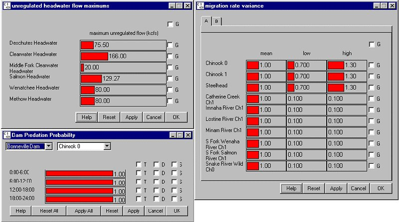

Slider Input windows are one type of data input windows found in COMPASS. Red sliders represent parameter settings and are changed using the mouse or the keyboard as described in the following sections. COMPASS variables that incorporate sliders include:
As shown below, there are several formats for Slider Input windows. The Unregulated Headwater Flow Maximum window is an example of the Slider Input window in its simplest form. The Migration Rate Variance window contains a "tab" list where the list of variables is longer than allowed for one screen (ten variables) and is accessible by clicking on the tabs (labeled A, B, etc.) at the top of the window. Also illustrated in this window is the concept of setting Mean, Low and High values for each variable. The Dam Predation Probability window illustrates a Slider Input window containing time-specific, dam-specific and species-specific settings.

Various Slider Input windows